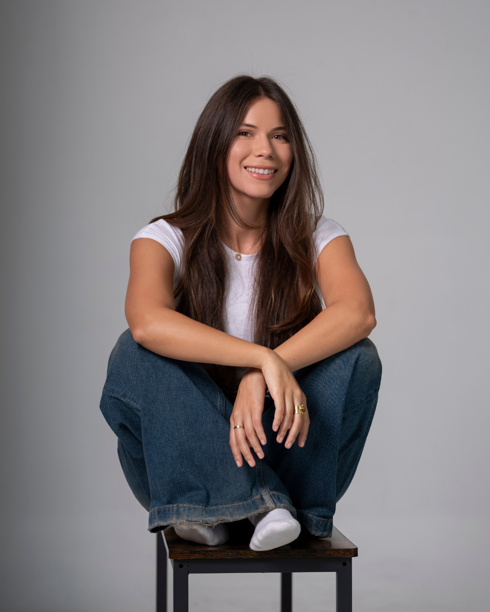
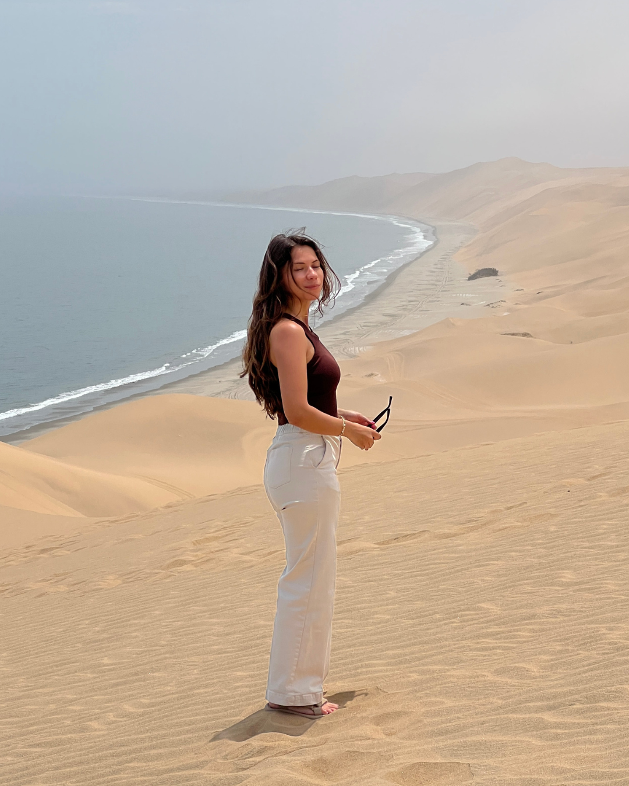

About me
I'm a fractional growth marketer who has always lived between the creative and the analytical.

I love brainstorming a brand name just as much as I love digging into campaign data to figure out why something is not converting.
I work with B2B companies, startups, and agencies, often building marketing programs from scratch. Paid campaigns, SEO and AEO, content, and the growth playbooks that help teams scale. A lot of the time I am the first marketer a team brings on, building the growth function alongside them from the ground up.
I started my career in the music industry, where many moons ago I had dreams of being a producer. Eventually I found my way into tech, and in 2018 I became the first marketing hire at a 16-person AI startup with zero ad budget and a lot of ambition.
That experience shaped everything. I was running sales demos, writing chatbot scripts, hunting for leads, launching a podcast, and figuring out which messages actually resonated with real people. I learned fast and got to create the playbook in real time.
I bring that same scrappy energy to my work today. I love working with teams that are just starting to build their growth engine, whether that is because they do not have a marketing team yet, or they are ready to test something new. I like to figure out what is working in the industry and then find our own creative angle.
Outside of work, I speak three languages, travel a bunch, and pay attention to things you could easily walk past. Branding on the street, how different cultures communicate, what makes someone stop and look. When I am not in front of a laptop, I am probably on a dance floor, catching a flight, or eating penne vodka.
— Amanda
Off the clock
My first time abroad was a two-week exchange trip to Spain. It totally opened up my worldview and made me fall in love with learning about other cultures and the different ways that people live.
Since then I've visited 20+ countries across five continents, always chasing the local perspective. Travel is what fuels my obsession with languages and being able to connect with people in their native tongue. Wherever I land, I'm hunting for a good dance floor, a beach with clear water, or somewhere to share a meal.
Then I bring everything that inspires me out there back into my work.
